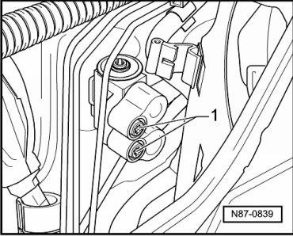
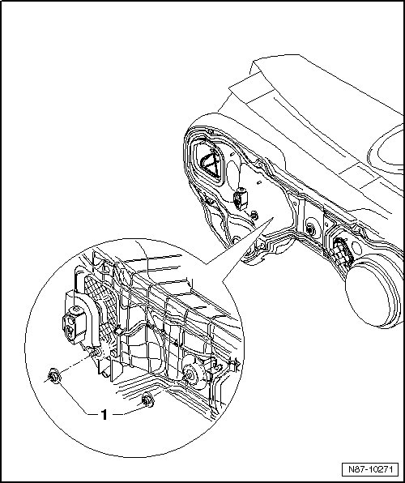

A/C Unit
A/C Unit
Special tools, testers and auxiliary items required
• Drip Tray For Shop Crane (VAS 6208)
• Hose Clamps Up To Diameter 40 Mm (3093)
• A/C Service Station (VAS 6007A) or succeeding model.
Removing
- Extract refrigerant circuit, e.g. using A/C Service Station (VAS 6007A), only then open the refrigerant circuit.
- Observe notes, refer to --> [ Engine Compartment Refrigerant Circuit Components, 2 Zone and 4 Zone ] Engine Compartment Refrigerant Circuit Components, 2 Zone and 4 Zone.
- Remove the instrument panel.
- Remove air intake shroud. Refer to --> [ Intake Housing ] Service and Repair
- Remove the expansion valve. Refer to --> [ Expansion Valve ] Removal and Replacement.
- Remove all air ducts to heating and A/C unit.
- Place Drip Tray For Shop Crane (VAS 6208) under the engine.
CAUTION!
Contact with hot engine coolant can cause severe scalding.
The cooling system is pressurized and the coolant temperature can be above 100° C with a warm engine.
If necessary, reduce pressure and temperature before repairs.
- Discharge refrigerant circuit.
CAUTION!
There is a danger of ice-up.
Refrigerant leaks out if refrigerant circuit is not discharged.
Refrigerant must be extracted before opening the refrigerant circuit. If the refrigerant circuit is not opened within 10 minutes after extracting it, pressure may build up in the circuit again. The refrigerant must be extracted again.
- Loosen coolant lines at screws - 1 -.

- Loosen refrigerant lines at heat exchanger. Refer to --> [ Heat Exchanger ] Service and Repair.
- Disconnect condensation water hose from heating and A/C unit.
- Disconnect harness connectors to heating and A/C unit.
- Remove assembly carrier.

- Loosen nuts - 1 - engine compartment-side from A/C unit.
- Remove A/C unit.
Installing
Install in reverse order.
- Replace coolant pipe O-rings.
Torque of coolant pipe screws to expansion valve is 10 ± 1 Nm.
• When installing, ensure condensation water hose is seated correctly and not kinked.